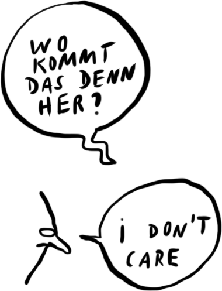

Tipp 3: Weitere Informationen finden!

Oft ist es gar nicht die Quelle, die wichtig ist, sondern was von einer bestimmten Information zu halten ist. Das möchten wir wieder an einem Gedankenexperiment verdeutlichen:
Stell dir vor, dass du einen Artikel gelesen hast, in dem die These vertreten wird, dass Bildschirmzeit bei Kindern unter 6 Jahren die Augen schädigt. Du hast eine kleine Tochter. Darum findest du das Thema für dich relevant. Der Wikipedia-Trick ergibt, dass der Artikel in einem Eltern-Blog veröffentlicht ist. Wichtig für dich ist nun aber gar nicht so sehr diese Quelle. Vielmehr möchtest du dir eine Meinung bilden und für dich die Frage beantworten können: Kann ich meine Tochter guten Gewissens hin und wieder auf dem Tablet spielen lassen?
Was wirst du tun?
Um ein umfassenderes Bild zum Thema zu gewinnen, kann es hilfreich sein, nach Artikeln zu recherchieren, die unterschiedliche Perspektiven, Studien und Diskussionen auflisten anstatt sich auf Artikel zu beschränken, die klare Pro- oder Contra-Positionen beziehen. Dein Ziel sollte es also sein, solche Artikel zu finden. Dabei hilft dir eine einfache Suchmaschine, in die du die passenden Schlagworte zu deiner Information einträgst. In unserem Beispiel also: Bildschirmzeit, Augen, Kita-Alter.
Den Tipp ‘Weitere Informationen finden’ kannst du auch anwenden, wenn du erfahren willst, ob eine bestimmte Information für dich von Relevanz ist oder nicht. Wenn also zum Beispiel in der WhatsApp-Gruppe vor einem gefährlichen Computervirus gewarnt wird, dann ist es am besten, die Schlagworte dazu kurz bei einer Suchmaschine einzugeben bzw. gezielt nach aktuellen Meldungen dazu zu recherchieren. Du kannst dir fast ganz sicher sein: Wenn niemand im Netz über den Computervirus schreibt, dann wird er eher nicht relevant sein.
Merke dir deshalb: Informiere dich durch 'Netzbefragung'!
Mit den Tipps 'Stopp', 'Quelle überprüfen' und 'Weitere Informationen finden' gelingt dir schon eine sehr wirkungsvolle Faktenprüfung. Uns fehlt nun nur noch eine Erklärung zu Tipp 4: Zurück zum Ursprung!